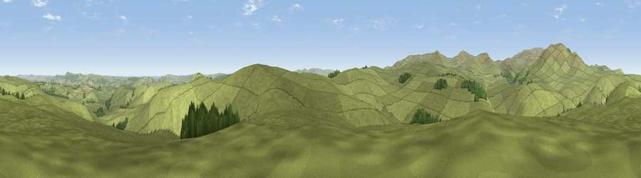

Viewpoint near Ingram
#7089 in England · top 27% of its area beats it · near IngramThe view, rendered

A 360° render of this exact spot computed from the terrain model, tree cover and land cover — summer colours, afternoon light, calibrated against photographs of famous viewpoints. Real trees, hedges and buildings will differ in detail.
The panorama
Grey silhouette: terrain skyline in each direction (720 bearings, Earth curvature and refraction included). Dashed green: skyline with trees (+15 m) and buildings (+8 m) as obstacles. Blue strip: how far the ground is visible on each bearing.
Where the view opens
Wedge length = distance to the farthest visible ground on that bearing (vegetation-aware). Rings at 10, 25 and 50 km.
What fills the view
96% grassland · 3% woodland · 1% cropland
Angular shares of the visible panorama (visual magnitude), not map area. Landscape diversity 0.09 (0–1 Shannon).
Key numbers
More beautiful places nearby
The staircase of upgrades: each row has a higher view potential than everything closer. Driving times are estimates from straight-line distance, calibrated against real road routing — check an actual route before setting out.
| Place | Direction | Drive | Score |
|---|---|---|---|
| Cochrane Pike | SE · 1 km | ~4 min | 75.8 |
| Viewpoint near Ingram | ESE · 2 km | ~6 min | 78.2 |
| Viewpoint near Ingram | NW · 4 km | ~9 min | 80.5 |
| Viewpoint near Ingram | NW · 4 km | ~10 min | 82.0 |
| Viewpoint c12396_7887 | NW · 7 km | ~15 min | 85.7 |
| Viewpoint near Chillingham | NE · 13 km | ~24 min | 88.1 |
| Long Side | SW · 115 km | ~139 min | 89.5 |
| Viewpoint near Easington | SE · 120 km | ~145 min | 90.2 |
55.42912, -2.00116 · source: screening · position refined by local search. Computed location — check access rights before visiting.